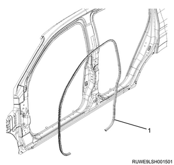
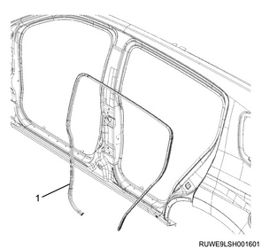
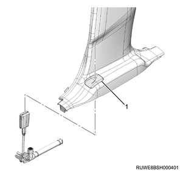
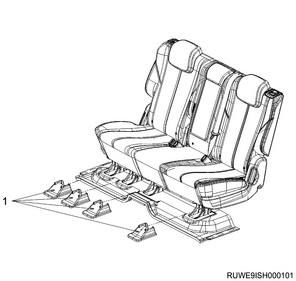
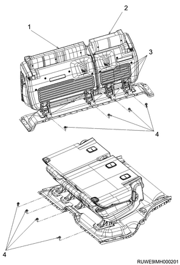
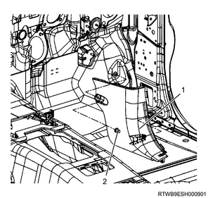
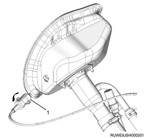

Fuel filler lid opener lever removal (All models)
1. Luggage rear trim removal
1. Remove the luggage rear trim from the floor.

- Luggage rear trim
2. Tail gate weather strip removal
1. Remove the tail gate weather strip from vehicle.

- Tail gate weather strip
2. Remove the buffer from the body.
Note
- After removing the weather strip, remove the buffer so as not to damage the painted surfaces.

- Buffer
- Weather strip
3. Sill plate removal
1. Remove the sill plate from the floor.
Note
- Remove the front sill plate.

- Front sill plate
Note
- Remove the rear sill plate.

- Rear sill plate
4. Front door finisher removal
1. Remove the front door finisher from the body.

- Front door finisher
5. Rear door finisher removal
1. Remove the rear door finisher from the body.

- Rear door finisher
6. Center pillar lower trim cover removal
Note
- The following applies to models with pretensioners and models without airbags.
1. Remove the seat belt lower anchor bolt from the center pillar.

- Seat belt lower anchor bolt
2. Remove the center pillar lower trim cover from the center pillar.

- Center pillar lower trim cover
Note
- The following applies to models with lap pretensioners.
3. Remove the tongue side seat belt from the lap pretensioner.
Note
- Loosen the screw and open the cover.
- Remove the tongue plate from the lap pretensioner.

- Seat belt
- Tongue plate
- Screw
- Cover
- Lap pretensioner
4. Remove the center pillar lower trim cover from the center pillar.
Note
- Move the center pillar lower trim cover upward and remove the lap pretensioner from the bezel rubber.

- Bezel rubber
7. 2nd seat removal
1. Remove the leg cover from the 2nd seat.

- Leg cover
2. Remove the 2nd seat from the floor.
Note
- Fold back the carpet to access the retaining bolts.
- Remove the seat retaining bolts.

- 2nd seat (LH)
- 2nd seat (RH)
- Carpet
- Bolt
8. Lower quarter trim cover removal
1. Remove the accessory socket from the lower quarter trim cover.
Note
- This procedure is applicable to the vehicle with accessory socket.

- Cover
- Accessory socket
2. Remove the luggage hook from the quarter panel.
Note
- Remove the cover and the screw.
3. Remove the lower quarter trim cover from the quarter panel.
Note
- Remove the cover with a small flat-blade screwdriver, etc., so as not to damage the lower quarter trim cover, and remove the screw.

- Luggage hook
- Screw
- Cover
- Cover
- Screw
- Lower quarter trim cover
9. Dash side trim pad removal
1. Remove the dash side trim pad from the body.
Note
- Remove the retainer.

- Dash side trim pad
- Retainer
10. Fuel filler lid opener lever removal
1. Remove the fuel filler lid opener lever from the instrument panel driver-side lower cover.
Note
- Remove the 2 screws, and disconnect the cable.

- Fuel filler lid opener lever
- Fuel filler lid cable
- Screw
11. Fuel filler lid cable assembly removal
1. Remove the fuel filler lid cable assembly from vehicle.
Note
- Roll the carpet back to expose the cable.
- Remove the fixing clip, and turn the cable holder counterclockwise by 90° to remove it from the rear body.

- Cable holder